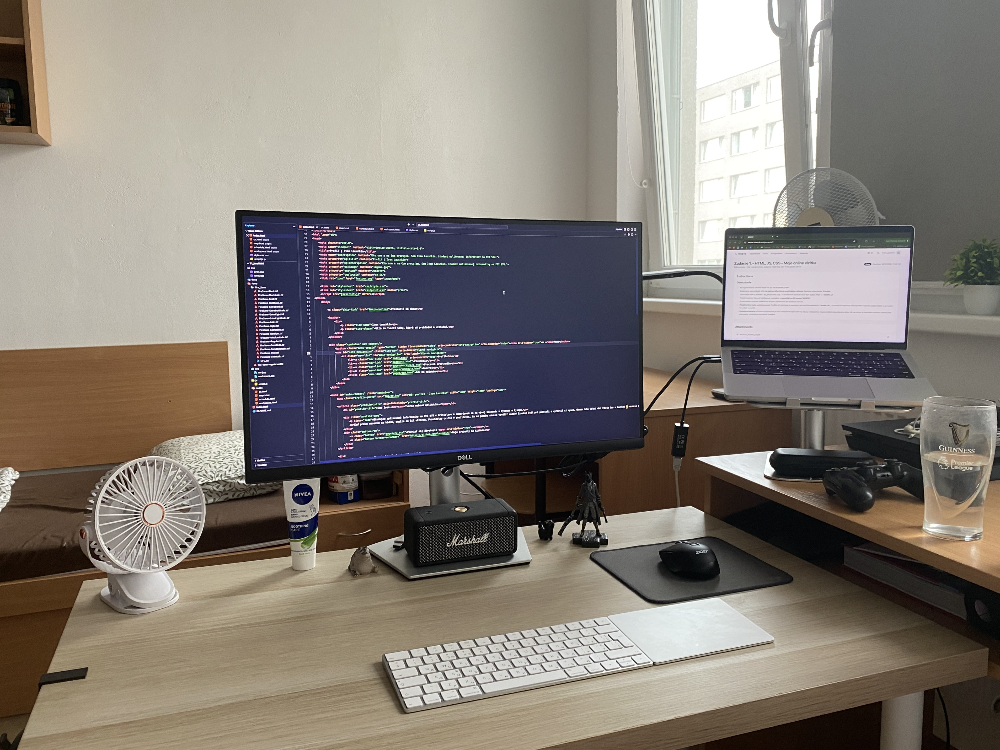

Moje pracovné prostredie
Na pracovnom stole mám vedľa seba trackpad a myš. Niekedy je pohodlnejšie pracovať s trackpadom, inokedy s myšoum.
Čo používam pri práci
Na počítači stačí aj prejsť myšou. Klávesnicou vyberiete oblasť tabulátorom a šípkami; na mobile klepnite na číslo.
